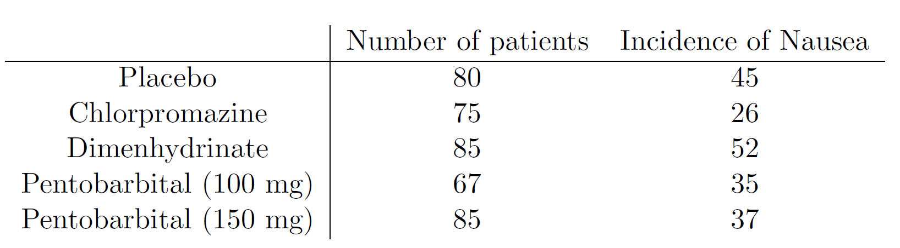
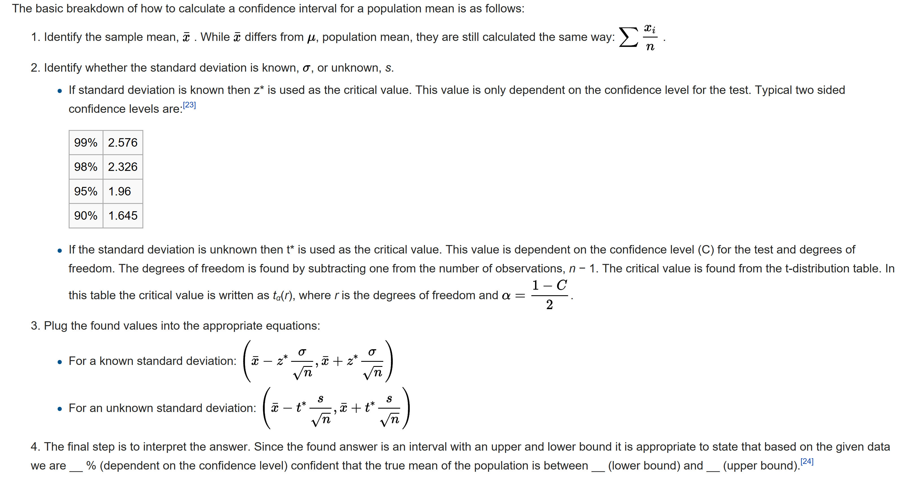
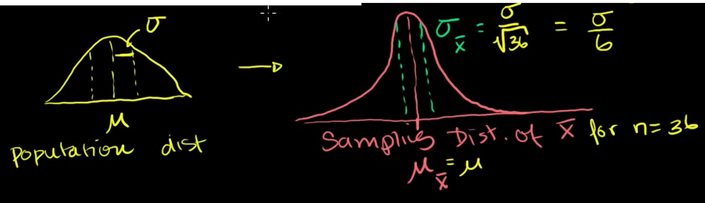
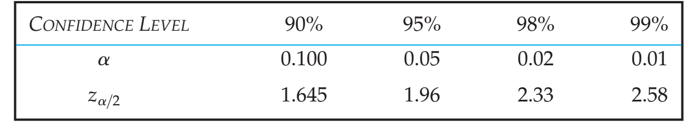
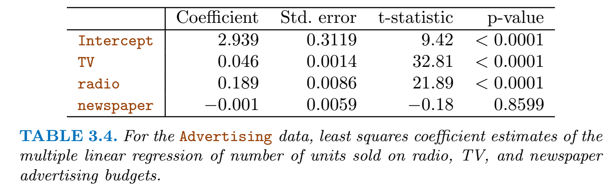
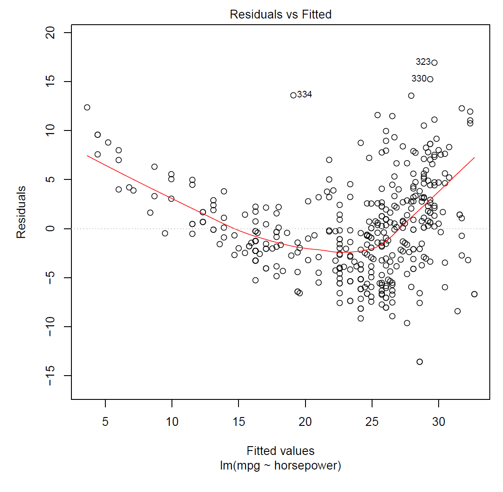
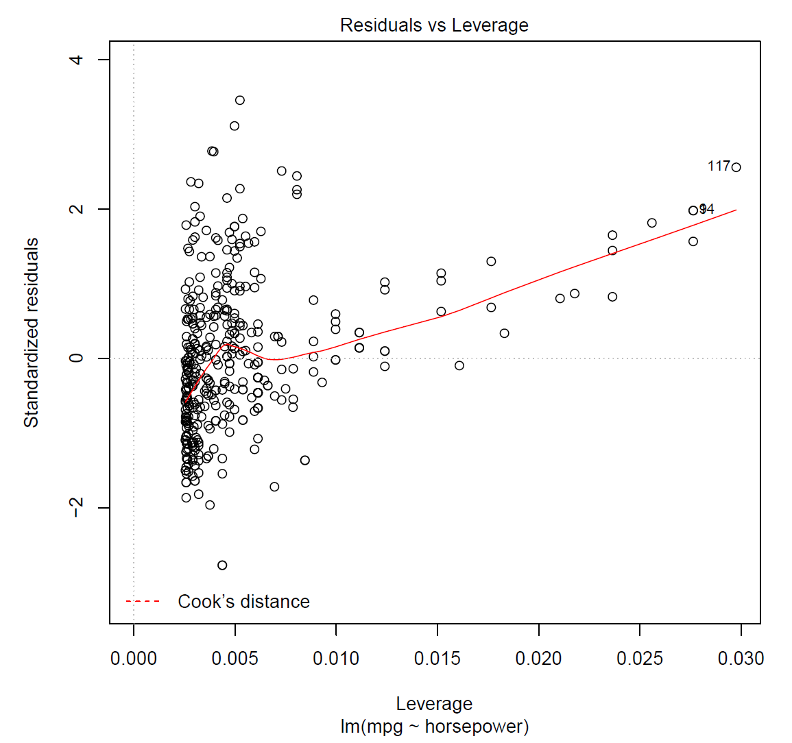
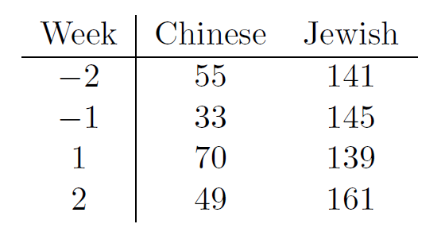
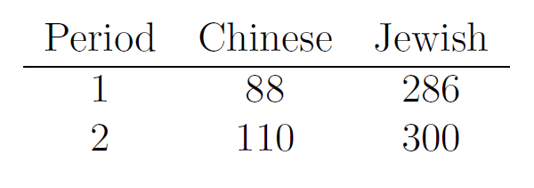

<!DOCTYPE html>
<html>
  <head>
    <meta charset='utf-8'>
    <meta http-equiv="X-UA-Compatible" content="chrome=1">
    <link href='https://fonts.googleapis.com/css?family=Chivo:900' rel='stylesheet' type='text/css'>
    <link rel="stylesheet" href="/assets/css/style.css?v=">
    <link rel="stylesheet" type="text/css" href="/assets/css/print.css" media="print">
    <!--[if lt IE 9]>
    <script src="//html5shiv.googlecode.com/svn/trunk/html5.js"></script>
    <![endif]-->
    <script src="https://cdn.mathjax.org/mathjax/latest/MathJax.js?config=TeX-AMS-MML_HTMLorMML" type="text/javascript"></script>
    <title>Badrul's Data Science Repository by </title>
  </head>

  <body>
    <div id="container">
      <div class="inner">

        <header>
          <h2><a href="index">Badrul's Data Science Repository</a></h2>
          <h3>Computing, Maths, Business, Bioinformatics</h3>
        </header>

        <section id="main_content">
          <h2>About this page</h2>
<p><br />
This page contains some key statistics knowledge. Everything is written in Q&amp;A format. Best way to use this page is what I call “Iterateive Failure”: Start at the top, and work down, every single time you get a question wrong, go back to the top and start again. Keep doing that, over and over again until you can go through the entire page without getting anything wrong. Or if you get bored or that way, start from the bottom an work your way up. Aim to get the all of the steps of the solution right.</p>

<p>This is a work in progress. If you spot any mistakes let me know.</p>

<hr />

<p><b>Contents</b>
<br /><a href="#Probability Fundamentals">Probability Fundamentals</a>
<br /><a href="#Probability Distributions">Probability Distributions</a>
<br /><a href="#Hypothesis Testing">Hypothesis Testing</a>
<br /><a href="#Confidence Intervals">Confidence Intervals</a>
<br /><a href="#Linear Regression">Linear Regression</a></p>

<hr />

<p><a id="Probability Fundamentals"></a></p>
<h2> Probability Fundamentals</h2>

<p><b> How do you calculate the total probability of lots of multiple things that happen in order and can affect the chance of the next thing?</b>
<br /><br />
Bayes Theorem &amp; Chain Rule. If a,b and c happen, in that order, then total prob = <script type="math/tex">% <![CDATA[
p(a) * p(b|a) * p(c|a \& b) %]]></script></p>

<p><b>What is the probability of anything happening ‘at least once’?</b></p>

<p>1 - P(never happening)</p>

<p><b>What is the probability of anything happening ‘at least X times’?</b></p>

<p>Assuming the ‘thing’ in question either happens or does not happen each time, then this can be answered using the binomial probability formula.</p>

<p><b>Two fair dice are thrown. Let X be the smallest of the two numbers obtained
(or the common value if the same number is obtained on both dice). Find the
probability mass function (i.e. the distribution) of X. Find <script type="math/tex">P(X > 3)</script>.</b>
<br />
<code>
Ans:
6x6 = 36 possibilities in total
Any two numbers has a 1 /36 chance
p(X&gt;3) = p(4,4)+p(4,5)*2+p(5,5)+p(6,4)*2+p(6,5)*2+p(6,6) = 0.25 =&gt; 25%</code></p>

<hr />

<p><b>On a coral reef, S species of fish are present in proportions <script type="math/tex">p1, ... , pS</script>. A
biologist wishes to take a sample of the fish, and wants to know how many
species of fish she should expect to find in a sample of a given size.<br />
<br />(a) Suppose a sample of size <script type="math/tex">n</script> is taken. Let <script type="math/tex">X_i (i = 1, ... ,S)</script> be a random variable taking the value 1 if species i occurs, 0 otherwise. Find an expression for <script type="math/tex">E(X_i)</script>. </b>
<br />(Assume that, first, the sample is small relative to the population
of any fish species, so that taking the sample has a negligible effect on the
proportions of fish remaining; second, species are distributed randomly so
that successive fish in the sample can be regarded as independent draws
from the population).
<br /><br />
<b>(b) Now let Y be the number of fish species present in the sample. Express Y
in terms of the <script type="math/tex">X_i</script>’s, and deduce that the expected number of species is
<script type="math/tex">S-\sum_{i=1}^{S}(1-p_i)^n</script>
Are you making any further assumptions in obtaining this result? Check
that the formula gives the correct result for a couple of different sample
sizes where the answer is “obvious”.</b>
<br /><br />
<b>Answer:</b><br />
S = # of different fish species<br />
<script type="math/tex">p_i</script> = proportion of fish i = probability of fish i<br />
<script type="math/tex">X_i</script> = {1,0}= fish i occurs, not occurs<br /> 
<script type="math/tex">E(X_i</script>) = average value for <script type="math/tex">X_i</script><br />
n = sample size<br />
<br />
a) 
There are lots of different ways that we can say the sample ‘contained at least 1 fish of type i’, and we cannot just do <script type="math/tex">(P_i)^n</script> as this is the probability of <i>every</i> fish in the sample being fish <script type="math/tex">i</script>.
However there is only 1 way it could be 0 (the probability that every fish in the sample does not equal that fish). <br />
P(not getting fish i in 1 fish) = <script type="math/tex">1-p_i</script><br />
multiplied by total fish sampled = <script type="math/tex">1-(1-p_i)^n = E[X_i]</script>
<br /><i>Note: If we were using “weight of fish” rather than a simple binary measure then we’d want to multiply the prob. by the weight to get to the E(weight). </i>
<br /><br />
b) Y = <script type="math/tex">\sum E[X_i] = \sum_{i=1}^S 1-(1-p_i)^n = S - \sum_{i=1}^S (1-p_i)^n</script>
<br />(If you are not following the last step - just think of the middle terms as being the sum of 1’s minus the sum of the probs).<br />
<br />Assume uniform distribution of fish in population and S = 10 species. Check result when n= 1 where Y should = 1, and 10000 where Y = S.</p>

<hr />

<p><b>
In a promotion for a particular airline, customers and potential customers were given vouchers. 10% of these vouchers were for a free round-trip anywhere this airline flies. How many vouchers would an individual need to collect in order to have a 50% chance of winning at least one free trip?</b>
<br /><br />
Trigger words here are ‘at least’.<br />
Probability of not winning at all = <script type="math/tex">0.9^S</script> where s = number of tickets<br />
<br />
<script type="math/tex">p(winning) = 1- 0.9^S</script>
<br />
7 tickets need to be purchased to have a 50% chance of winning</p>

<hr />

<p><b>Karlyn Akimoto operates a small computer store. On a particular day she has three Hewlett-Packard and two Dell computers in stock. Suppose that Susan Spencer comes into the store to purchase two computers. Susan is not concerned about which brand she purchases—they all have the same operating specifications—so Susan selects the computers purely by chance: Any computer on the shelf is equally likely to be selected. What is the probability that Susan will purchase one Hewlett-Packard and one Dell computer?</b>
<br /><br />
<code>p(HP and Dell) = P(HP|Dell first)*P(Dell first) + P(Dell|HP first)*P(HP first) = 3/4*2/5 + 2/4*3/5 = 0.6</code></p>

<hr />

<p><b>An urn contains 6 red marbles and 4 black marbles. Two marbles are drawn without replacement from the urn. What is the probability that both of the marbles are black?</b>
<br />
<br />
<code>p(black &amp; black) = p(black|black)* P(black) = 4/10 * 3/9 = 0.13 =&gt; 13%</code></p>

<p><b>Five friends including Omar and Sarah go to a party. On their way out they each pick one of the 5 jackets randomly (without replacement.<br />
What is the probability that:<br />
a) Omar ends up with his own jacket?<br />
b) everyone ends up with their own jacket?<br />
c) both Omar and Sarah don’t end up with their own jackets?<br />
</b>
<code>
Assuming everyone left at exactly the same time then:<br />
a) 1/5 0.2
b) 1/5^5= 0.0003
c) 4/5*4/5 = 0.640</code></p>

<p>&lt;/code&gt;</p>

<p><a id="Probability Distributions"></a></p>
<h2> Probability Distributions</h2>

<p><b>Describe the Bernoulli,  Binomal distributions and the Possion Distributions</b>
<p><br />
A <b>Bernoulli</b> distribution is when the outcome of an event is binary - success or not.
<br />
A <b>Binomial</b> is like a Benoulli but repeated multiple times (e.g. flipping a coin 10 times). It requires knowing the prob. of something occurring (&amp; hence not occuring too)
<br />
P(k num of successes out of n trials) = $$\binom{n}{k}* p(Success)^k*P(Not Success)^{n-k} =  \frac{n!}{k!(n-k)!} * p^kq^{n-k}$$

n = number of trials<br />
k = number of successes
nCr on calculator will perform the $$\binom{n}{k}$$ section
</p>
<br />
The <b>Poisson</b> distribution is popular for modeling the number of times an event occurs in an interval of time or space.
<br />
$$P\left( X \ events \ in \ interval\right) = \frac{{\lambda ^x e^{ - \lambda } }}{{x!}}$$
<br />
<br />e: A constant equal to approximately 2.71828. (Actually, e is the base of the natural logarithm system.)
<br />$$\lambda$$: (sometimes referred to as mean $$\mu$$). The mean number of successes that occur in a specified period.
<br />x: The actual number of successes that occur in a specified period.
<br />P(x; $$\lambda$$): The Poisson probability that exactly x successes occur in a Poisson experiment, when the mean number of successes is $$\lambda$$. 
<br /><br />
It applies when: 
<br />(1) occurrences are independent, so that one occurrence neither diminishes nor increases the chance of another; <br />(2) the average frequency of occurrence for the time period in question is known; and 
<br />(3) it is possible to count how many events have occurred, such as the number of times a firefly lights up in my garden in a given 5 seconds, some evening, but meaningless to ask how many such events have not occurred. 
<br />
<br />
The Poisson Distribution is asymmetrical: given a rate $$\lambda$$ = 3, the range of variation ends with zero on one side (you will never find "minus one" letter in your mailbox), but is unlimited on the other side (if the label machine gets stuck, you may find yourself some Tuesday with 4,573 copies of some magazine spilling all over your front yard - it's not likely, but you can't call it impossible). The Poisson Distribution, as a data set or as the corresponding curve, is always skewed toward the right, but it is inhibited by the Zero occurrence barrier on the left. 

The degree of skew diminishes as r becomes larger, and at some point the Poisson Distribution becomes, to the eye, about as symmetrical as the Normal Distribution. But much though it may come to resemble the Normal Distribution, to the eye of the person who is looking at a graph for, say, $$\lambda$$ = 35, the Poisson is really coming from a different kind of world event. 

<br />
<br />The cumulative version of this formula is simply to calculate it individually and add it up, or use a Poisson table.
</p>

<hr />

<p><b>For each case below, state whether the binomial distribution is suitable. If not,
give your reasons; if it would, state the values of parameters trials, n and probability p.<br />
<br />(i) The number of sixes obtained in three successive throws of a fair die.
<br />(ii) The number of girls in the families of British prime ministers.
<br />(iii) The number of aces in a hand of four cards dealt from a standard pack of
cards.
<br />(iv) The number of students in a class of 40 whose birthday falls on a Sunday
this year.
<br />(v) The number of throws of a fair coin until the first head is obtained.</b>
<br />
<br />
Binomial Distribution require number of trials n, and probabilty of success p, to remain fixed
<br />1)Yes, n=3, p=1/6
<br />2)No - n is not a constant (different families have different numbers of children)
<br />3)No, prob of Aces is not constant (decreases over time)
<br />4)Yes - p(Sunday in this year) is constant ~1/7 days, and k = 40
<br />5)No - n is not fixed</p>

<hr />

<p><b>Consider a jury trial in which it takes 8 out of the 12 jurors to convict. That is,
in order for the defendant to be convicted, at least 8 of the 12 jurors must vote
him guilty. Assume that jurors act independently and each makes the right
decision with probability p. Let <script type="math/tex">\alpha</script> denote the probability that the defendant is
guilty. What is the probability that the jury renders a correct decision?</b></p>

<p><code>P(correct) = P(guilty verdict)*P(isGuilty) + P(innocent)*P(isInnocent)
P(guilty verdict) = Binomoal prob. of 8,9,10,11,12, summed up
P(innocent verdcit) = Binomial prob. of 1,2,3,4,5,6,7, summed up</code></p>

<p><script type="math/tex">P(Guilty Verdict)*P(isGuilty) = \sum_{k=8} ^{12} \binom{12}{k}* p^k*(1-P)^{12-k} * \alpha</script>
<script type="math/tex">+</script>
<script type="math/tex">P(Innocent Verdict) * P(isInnocent) = \sum_{k=0} ^{7} \binom{12}{k}* p^k*(1-P)^{12-k} * (1-\alpha)</script></p>

<p>note: <script type="math/tex">\binom{12}{k}</script> means <script type="math/tex">\frac {12!}{(12-k)!k!}</script></p>

<hr />

<p><b>An exam paper consists of ten multiple choice questions, each offering four
choices of which only one is correct. If a candidate chooses his answers completely at random, what is the probability that<br />
(i) he gets at least 8 questions right<br />
(ii) the last of the ten questions is the eighth one he gets right <br />
(iii) in six such exams, he gets at least 8 questions right in at most one exam?</b>
<br />
i) <br />
p(k&gt;=8) = p(k=8)+p(k=9)+p(k=10)
<br />Using Binomal theorem where n=10, p=0.25:<br />
p(k=8) = <script type="math/tex">\frac{10!}{8!(10-8)!} * 0.25^8 * 0.75^{2} = 0.0038 *</script><br />
p(k=9) = <script type="math/tex">\frac{10!}{9!(10-9)!} * 0.25^9 * 0.75^{1}</script> = 0.00028<br />
p(k=10) = <script type="math/tex">\frac{10!}{10!(10-10)!} * 0.25^{10} * 0.75^{0} = 0.00007</script>
<br />= 0.004
<br />In R:
dbinom(10, size=10, prob=0.25)+dbinom(9, size=10, prob=0.25)+dbinom(8, size=10, prob=0.25) = 0.0004</p>

<p>ii) = P(7/9 right) + 0.25
ii) We know the answer to p(of getting at least 8) from part I. So this becomes a new binomial question with k = 1, n=6, and p=0.0004.</p>

<hr />

<p><b>Andrew Whittaker, computer center manager, reports that his computer system experienced three component failures during the past 100 days. 
<br />a. What is the probability of no failures in a given day? 
<br />b. What is the probability of one or more component failures in a given day? 
<br />c. What is the probability of at least two failures in a 3-day period?</b></p>

<p>&lt;/b&gt;
<br />
Assuming the past 100 days is typical and component failures are independent of one another then we can computer the probability of failure usisng the Poisson distribution:<br />
<br />
<script type="math/tex">\lambda (mean)</script> = 3/100 = 0.03
<br /><br />a)<script type="math/tex">p(x=0) = \frac {0.03^0*e^-0.03} {0!} = 0.9075</script>
<br />b) 1-p(x=0) = 0.0295
<br />c)<script type="math/tex">\lambda = 3*0.003 p(x>=2) = 1 - p(x=0)+p(x=1) = 1-0.9139+0.0822=0.003815</script></p>

<hr />

<p><b>A typist makes on average 2 mistakes per page. What is the probability of a particular page having no errors on it? </b>
<br /><br />
We have an average rate here: <script type="math/tex">\lambda</script> = 2 errors per page.
Using Poisson distribution. 
(<script type="math/tex">\lambda</script>) = (2 errors per page * 1 page) = 2.
Hence P0 = <script type="math/tex">\frac{2^0}{0!} * exp(-2) = 0.135</script>.</p>

<hr />

<p><b>Components are packed in boxes of 20. The probability of a component being defective is 0.1. What is the probability of a box containing 2 defective components? </b></p>

<p>p(defective) = 0.1 and hence p(not defective) = 0.9. Hence, Binomial, with n = 20.</p>

<p>P(2 detective out of 20 trials) = <script type="math/tex">=  \frac{20!}{2!(18)!} * 0.1^20.9^{18} = 190 * 0.002 = 0.285</script></p>

<hr />

<p><b>A coin is tossed 10 times. What is the probability that exactly 6 heads will occur.</b></p>

<p><code>Using Binomial formula:
Success = "A head is flipped on a single coin"
p = 0.5
q = 0.5
n = 10
x = 6
P(x=6) = 10C6 * 0.5^6 * 0.5^4 = 210 * 0.015625 * 0.0625 = 0.205078125 </code></p>

<p><b>Say you toss 1,000 different coins once each, which you assume are identically
distributed. Would you change your test for fairness? Would you think of ways in
which the test could fail to behave as expected?</b></p>

<p>Assuming coins were independent (iid) the binomial could be used.
If not independent (e.g. coins always landed tails if the year they were made was an odd number, and head otherwise) then you could end up with it not rejecting the null hypothesis when it ought to be rejected</p>

<p><b>If you toss a coin 1,000 times and observe 570 heads, how would you assess the claim
that the coin is fair?</b>
<br />
<script type="math/tex">H_0 = p(H) = 0.5</script><br />
Using Binomial: n = 1000, k = 570 
<script type="math/tex">\frac{1000!}{570!(1000-570)!} * 500^k500^{1000-570}</script>
<br />This does not work on a calculator so use R instead:
In R:   <code>binom.test(500,1000,0.5) </code>
<code>
Output:
Data:  500 and 1000
number of successes = 500, number of trials = 1000, p-value = 1
alternative hypothesis: true probability of success is not equal to 0.5
95 percent confidence interval:
 0.4685492 0.5314508
sample estimates:
probability of success 0.5 
</code>
<br />95% CI = 469 - 531. 570 is outside of this range therefore reject null hypothesis.</p>

<p><a id="Hypothesis Testing"></a></p>
<h2>Hypothesis Testing</h2>

<h4>Pearsons Chi-squared test for Goodness of Fit</h4>

<p><b>Goodness of Fit</b>
- It compares ‘Expected’ vs. ‘Observed’ outcomes where the expected outcome would be from some underlying probability model
- It assesses the ‘Goodness of fit’ through several different algorithms:
    - Kolmogorov–Smirnov test
    - Pearsons Chi-squared test
    - ..and others.</p>

<p><b>Chi-Squared Test</b><br /><br />
If you had results 10,20,20,30,10,10
and based on probabilities you expected it to be more like: 20,20,20,20,20,20 then:<br />
Chi-Sq test = <script type="math/tex">\sum\frac{(x_i - E_i)^2}{E_i}</script> = 20.
<br />Look up p-value in Chi-Square table with N-1=5 degrees of freedom to find out what the</p>

<hr />

<p><b>The following table summarizes data from a
double-blind experiment that aims at comparing particular drugs for nausea reduction
against a placebo. Assume each patient is independently assigned one of the treatment
groups, or the placebo.
 
<br />Test each drug versus the placebo at the 5 per cent level. Report what the result would
be under a Bonferroni adjustment, and how the interpretation changes.</b></p>

<p>Each row of data can be considered an independent binomial test with n being num. of patients and k being incidence of Nausea. We can use the placebo to generate the true probaibility that we use as a binomial test for the other rows.<br /></p>

<p>However as we are conducting multiple independent trials here the Bonferroni adjustment (which is to divide your <script type="math/tex">\alpha</script> by the number of tests you are doing could be used to reduce the risk of a Type I error (rejecting the null as over multiple experiments one result happened to be significant).</p>

<hr />

<p><b>George Mendel bred four different types of peas, starting with round yellow seeds and wrinkled green seeds. Each pea could result in one of four categories: round yellow, wrinkled yellow, round green and wrinkled green. Mendel’s theory dictates that these categories follow a
discrete distribution with respective probabilities
<br /><br />
<script type="math/tex">p_0 = \Bigg(\frac9{16}\frac3{16}\frac3{16}\frac1{16}\Bigg)</script>
<br />
His experiment had a sample size n = 556, where the observed counts were X =
(315, 101, 108, 32). We want to test whether this data supports the theory or not.
<br /><br />For that, first calculate Pearson’s <script type="math/tex">X^2</script> statistic where <script type="math/tex">X_j</script> is the count data for category <script type="math/tex">j</script>, and <script type="math/tex">E_j</script> is the expected count under the null
H0 : <script type="math/tex">p</script> = <script type="math/tex">p_0</script>, with <script type="math/tex">p</script> being the distribution parameter vector of the multinomial.
If we have <script type="math/tex">k</script> categories, T will have a chi-squared distribution with <script type="math/tex">k-1</script> degrees of freedom
(“degrees of freedom” is just the fancy name given to the parameter of the chi-squared).
Describe how you would use this chi-squared statistic to test Mendel’s theory.<b>
<br />
<br />
Observed = 315, 101, 108, 32<br />
Expected = 312.7, 104.2, 104.2, 34.75<br />
<script type="math/tex">\chi^2 = \frac{5.06}{312.7}+ \frac{10.56}{104.2}+ \frac{14.06}{104.2}+\frac{7.56}{34.75} = 0.47</script>
<br /><br />
We then look for the critical region for for <script type="math/tex">\chi^2</script> with d.f of 3 (4-1) and confidence of 95%. Using R or an online calulator:
http://www.socscistatistics.com/pvalues/chidistribution.aspx
we find that the P-Value is 0.925431. Therefore the result is NOT significant at p &lt; 0.05.</b></b></p>

<hr />

<p><a id="Confidence Intervals"></a></p>
<h2>Confidence Intervals</h2>

<p></p>

<p><b>What is a sampling distribution?</b></p>

<p>It’s the distribution of a statistic that you get from taking lots of samples from a population. So you take a sample, work out your statistic (e.g. mean of your sample), throw the sample away, and repeat. Over-time you will build up a picture (i.e. distribution) of your statistic. The <b>mean</b> of that statistic, whether it’s the mean of a mean or mean of something else, will get closer to the mean of the populaton statistic, with the more samples you have and the greater the sample size is.</p>

<p></p>

<p><b> How can you compare the mean across two populations?</b><br />
If you have two samples (a &amp; b) which you believe ought to have the same underlying distribution and which to do a test to see if this is the case then:<br />
a) You will want to test the difference in a test statistic (e.g. the mean) between a &amp; b
<br />b) Provided the samples are both large enough OR both samples are assumed to be from a normal distribution, then you will be able to assume that the difference you see between a and b would follow a normal distribution.
<br />c) You can therefore test this difference by saying your null hypothesis is the difference is not statististically different from a difference of 0.
<br />d) To work out the boundary (i.e. Confidence Interval) where you can say this you would compute:</p>

<p>If you took just one sample from the population, you could either ask yourself how close are you to the true statistic, and if you think you are far, then continue sampling; or you could ask whether you are</p>

<hr />

<p><b>You want to  conduct a survey in which you know the population mean to be 0 and need to determine the right sample size for your survey.
<br />For a sample size n = 10, 50, 100, consider the test:<br /> Null hypothesis <script type="math/tex">H_0 : \mu</script> (sample mean) = 0 (population mean)<br /> vs. Alternative <script type="math/tex">H_1:\mu</script> (sample mean) &lt;&gt; 0 (population mean) <br />for a sample following a Gaussian distribution N(<script type="math/tex">\mu, \sigma^2</script>), where <script type="math/tex">\sigma^2</script>
is known and the level of the test is <script type="math/tex">\alpha</script> = 0:05.<br /><br /> Write down the power of this test as a
function of the true mean <script type="math/tex">\mu_0</script>. <br />How would this change if <script type="math/tex">H_0</script> was <script type="math/tex">\mu</script> &lt;=0?</b>
<br /><br />
a) 
To calculate a confidence interval you need:
<script type="math/tex">\bar{X} \pm z_{\alpha/2} \frac{\sigma}{\sqrt{n}}</script>
<script type="math/tex">\sigma = std. dev</script>
<br />b) We want the test to be at the 95% Confidence Level. For a two tailed test at this level we know that Z=+/- 1.96 for an alpha of 0.05 (95% confidence) spread out across two tails 
<br /><br />
c) Therefore we can say our critical region (a fancy word for the remaining 5% not in the confidence interval) would be from <script type="math/tex">CriticalRegion = \bar{X} \pm 1.96 \frac{\sqrt\sigma}{\sqrt{10}}</script></p>

<p>According to Prof: 
<code>The sample variance is a function of the data, defined as the sample average of (x_i – x_bar)^2, that is, sum_i{(x_i – x_bar)^2} / n. It also  gives an estimate of the variance of the data distribution. When n goes to infinite, the sample variance goes to s^2 (in most reasonable conditions).</code></p>

<p>s^2 / n is <em>not</em> the sample variance. It is the variance X_bar, which has its own distribution that is related to but <em>not</em> the same as the distribution of  X_1 or X_2 etc.. Consider the following. Remember from exercise sheet 1 that Var(aX + b) = a^2 * Var(X), for constants a and b. Also, Var(X + Y) = Var(X) + Var(Y) if X and Y are independent.</p>

<p>The following then shows how Var(X_bar) is derived from Var(X_1) = Var(X_2) = … = Var(X_n) = s^2:
1.       Var(X_bar) =  Var((X_ 1 + .. + X_n) /  n  = Var((X_1 + … + X_n)) / n^2 =
2.       (Var(X_1) + … + Var(X_n)) / n^2 =
3.       n * s^2  / n^2 =
4.       s^2 / n.
We can estimate s^2 / n by “sample variance” / n.</p>

<p>Which is not the same as the variance of some other given statistic. For instance, if I take the sample median (sort the data ; pick point in the middle), its variance in general is <em>not</em> sigma^2 /n (it will be if the sample median and the sample mean are the same, but in general they are not) so “sample variance” / n might not make sense as an estimate of the variance of the sample median (hence, the bootstrap can help here). If I take the sample maximum (like in question 10 of exercise 3), its variance in general is not sigma^2  /n either.</p>

<p>That is, Var(X_1) = … = Var(X_n) = s^2, which is different from Var(Sample average) which may be different from Var(Sample median) which may be different from Var(Sample Maximum) etc.&lt;/code&gt;</p>

<p><b>Power </b>
…to be completed…
<br />
Useful links:
<br />http://www.statsref.com/HTML/index.html?test_for_mean_when_standard_de_2.html
<br />(http://sphweb.bumc.bu.edu/otlt/MPH-Modules/BS/BS704_HypothesisTest-Means-Proportions/BS704_HypothesisTest-Means-Proportions3.html)</p>

<hr />

<ul>
  <li>Confidence Intervals can be constructed for any sample statistic, not just the mean</li>
  <li>Confidence interval = sample statistic <script type="math/tex">\pm</script> Margin of error</li>
  <li>Margin of error (ME) = Critical value * (either Standard deviation OR Standard error of sample statistic)</li>
</ul>

<p><b>Finding the critical value</b><br />
The central limit theorem states that the sampling distribution of a statistic will be nearly normal, if the sample size is large enough. As a rough guide, many statisticians say that a sample size of 30 is large enough when the population distribution is bell-shaped. But if the original population is badly skewed, has multiple peaks, and/or has outliers, researchers like the sample size to be even larger.</p>

<ul>
  <li>Obtain your alpha <script type="math/tex">\alpha</script>, which is (1 - confidence level)</li>
  <li>Divide alpha by 2 if doing a two-tail test and then use either the Z-table or the T-Table to get a Z or T score:
    <ul>
      <li>If the population standard deviation is known, use the z-score.</li>
      <li>If the population standard deviation is unknown, use the t statistic.</li>
      <li>Another approach focuses on sample size.</li>
      <li>If the sample size is large, use the z-score. (The central limit theorem provides a useful basis for determining whether a sample is “large”.)</li>
      <li>If the sample size is small, use the t statistic.</li>
    </ul>
  </li>
</ul>

<hr />

<p>Nine hundred (900) high school freshmen were randomly selected for a national survey. Among survey participants, the mean grade-point average (GPA) was 2.7, and the standard deviation was 0.4. What is the margin of error, assuming a 95% confidence level?</p>

<p><b>How do you calculate a confidence interval around a mean from a sample of data?</b>
<br />
Margin of Error (ME) = <script type="math/tex">Z_{\alpha/2} \frac{\sigma}{\sqrt(n)}</script>
<br />
CI = mean <script type="math/tex">\pm</script> ME
<br />
</p>

<p>George Samson is responsible for quality assurance at Integrated Electronics. Integrated Electronics has just signed a contract with a company in China to manufacture a control device that is a component of its manufacturing robotics products. Integrated Electronics wants to be sure that these new, lower-cost components meet its high-quality standards. George has asked you to establish a quality-monitoring process for checking shipments of control device A. The variability of the electrical resistance, measured in ohms, is critical for this device. Manufacturing standards specify a standard deviation of 3.6, and the population distribution of resistance measurements is normal when the components meet the quality specification. The monitoring process requires that a random sample of n = 6 observations be obtained from each shipment of devices and the sample variance be computed. Determine an upper limit for the sample variance such that the probability of exceeding this limit, given a population standard deviation of 3.6, is less than 0.05.
<br /></p>

<p><a id="Linear Regression"></a></p>
<h2>Linear Regression</h2>

<p><b>Describe the null hypotheses to which the p-values given in the table below correspond. Explain what conclusions you can draw based on these p-values. Your explanation should be phrased in terms of sales, TV, radio, and newspaper, rather than in terms of the coefficients of the linear model.<br /></b>
</p>

<p>Null hypothesis <script type="math/tex">H_0</script>: No linear relationship between the number of units sold and intercept, TV, radio, or newspaper.
So for Intercept, TV, and radio, the small p-value means that there is evidence that
these contributed to the behaviour of sales, while newpaper advertising did not
(given advertising in other media). It cannot be concluded that spending money
on newspaper advertising is useless, only that it seems not to contribute to sales
when TV and radio are being used. It also does not mean that changing the way
newspaper funds are used would continue not to show an effect on sales, only that
the way done in the data does not seem to work.</p>

<p><b>What is the power of a test</b>
<br />
power = 1 – β.
In plain English, statistical power is the likelihood that a study will detect an effect when there is an effect there to be detected. If statistical power is high, the probability of making a Type II error, or concluding there is no effect when, in fact, there is one, goes down.</p>

<hr />

<p><b>Interpret the following</b></p>

<p><code>
Call:
lm(formula = mpg ~ horsepower, data = Auto)</code></p>

<p>Residuals:
     Min       1Q   Median       3Q      Max 
-13.5710  -3.2592  -0.3435   2.7630  16.9240</p>

<p>Coefficients:
             Estimate Std. Error t value Pr(&gt;|t|)  <br />
(Intercept) 39.935861   0.717499   55.66   &lt;2e-16 <em>**
horsepower  -0.157845   0.006446  -24.49   &lt;2e-16 **</em></p>

<p>Signif. codes:  0 ‘<em><strong>’ 0.001 ‘</strong>’ 0.01 ‘</em>’ 0.05 ‘.’ 0.1 ‘ ’ 1</p>

<p>Residual standard error: 4.906 on 390 degrees of freedom
  (5 observations deleted due to missingness)
Multiple R-squared:  0.6059,	Adjusted R-squared:  0.6049 
F-statistic: 599.7 on 1 and 390 DF,  p-value: &lt; 2.2e-16
 &lt;/code&gt;</p>

<p>a) The p-value on the F-statistic shows the the model was able to make results are statistically significant 
<br />b) As there’s only one covariate we can see the same p-value in the co-efficients row showing horsepower was statistically significant and inversely correlated with the output
<br />c) The residuals are farily well banced around the a median that’s close to 0
<br />d) The Residul standard error of 4.906 shows that the predicted output can vary from the true value by 4.906 on average
<br />e) The R-squared of 0.6 can be considered good</p>

<hr />

<p><b> What do these two charts show you?<b></b></b></p>

<p> 
</p>

<ul>
  <li>Top chart is a residual plot. Residual = the difference between you predicted Y and the actual Y, i.e. you are looking at the errors in your model. Very useful chart - you want your errors to be consistent across the predicted values (aka fitted valaues)</li>
  <li>Bottom chart is a similar thing but when you are working in higher dimensions (to be completed…)</li>
</ul>

<hr />

<p><b>What are the names for the inputs and outputs of a lineear regression model?</b>
<br /><br />
Input variables can be called:
    - Covariates
    - Inputs
    - Regressors
    - Independent variables (bad name!)
<br />Output variable is called:
    - Output
    - Response
    - Dependent variable (bad name!)</p>

<hr />

<p><b> What is Heteroscedasticity</b>
<br /><br />
In linear regression this means that your variance / error is not consistent due to sub-groups within your data. Example plotting the residuals may show variance increasing over time.</p>

<hr />

<p><b>What is collinearity?</b>
<br /><br />
When two or more variables are closely correlated with one another</p>

<hr />

<p><b>If your Linear regression model seemed to indicate “If we increase the TV budget by one thousand then, other things being equal, I will sell 400 hundred more units of my product, in expectation.” would this imply it was true?</b>
<br /><br />
No - because there might be hidden causes that is causing both to happen. Example the data from the larger advertising budget came from more economically affluent areas where shoppers have more money to spend</p>

<h2><b>Questions that are yet to be answered...</b></h2>

<p><b>One method we have seen for finding confidence intervals is finding pivots such as
    <script type="math/tex">Q(X, \mu) \equiv \frac{(\hat{\mu}(X) - \mu)}{\hat{\sigma}(X)}</script>, where we explicitly represented empirical average <script type="math/tex">\hat{\mu}</script>
and empirical standard deviation <script type="math/tex">\sigma</script> as functions of the data X. A pivot is not a
statistic as it depends on the unknown parameter, but it has a distribution which
does not (N(0, 1) in a typical example).<br />
<br />Another way of building a confidence interval is by inverting a test statistic.
For instance, suppose we have data <script type="math/tex">X^{(1)}...X^{(n)} ~ N(\mu, \sigma^2)</script> from a known <script type="math/tex">\sigma^2</script> but
unknown <script type="math/tex">\mu</script>. Consider some test for H0 : <script type="math/tex">\mu</script> = <script type="math/tex">\mu_0</script> at a level <script type="math/tex">\alpha</script>. Describe how the
machinery behind this test can be converted into a 1 - <script type="math/tex">\alpha</script> confidence interval for <script type="math/tex">\mu</script>.</b></p>

<p>First of all let’s translate this to plain English.
<br />Pivot - refers to anything around which we can build a confidence interval. It’s true value will be unknown but it will have a probability distribution, typically a Gaussian one.</p>

<hr />

<p><b>Suppose that the number of distinct uranium deposits in a given area is a
Poisson random variable with parameter <script type="math/tex">\lambda</script> = 10. If, in a fixed period of
time, each deposit is independently discovered with probability 1/50, find the
probability that (i) exactly one, (ii) at least one and, (iii) at most one deposit
is discovered during that time.</b>
<br /><br />
i) We have a probability here, so we know a bimial probability distribution can be used.
For Binomial:
<br />P = 1/50
<br />Q = 49/50
<br />N = this is where you realize N = the Possion distribution(10) <br />
<br />
After this it gets complicated. Basically you are iterating the Poisson over the Binomial formula<full answer="" not="" shown=""><br />
&lt;img src="img/Q1_h.png" width=800&gt;
&lt;img src="img/Q1_h2.png" width=700&gt;</full></p>

<p><b>There is a theory that people can postpone their
death until after an important event. Here are the numbers, in a particular year, of
elderly Jewish and Chinese women who died just before and after the Chinese Harvest
Moon Festival.

<br />
Compare the two mortality patterns using a hypothesis test, explaining your reasoning.
</b>
<br />
Method 1:<br />
First summarize the data into period 1 and period 2
</p>

<p>We want to know whether the probability of deaths between the two groups are the same.
<script type="math/tex">p_1</script> = proportion of deaths for Chinese in P1
<script type="math/tex">p_2</script> = proportion of deaths for Jewish in P1
<br />
We can now think of this as two binomial distrbutions, one for Chinese and one for Jewish.  <br />
<br />C ~ Binomial(198,<script type="math/tex">p_1</script>)<br />
J ~ Binomial(586,<script type="math/tex">p_2</script>)
<br />
We want to know whether the two distributions have the same Proportions of people dying in Period 1. Our null hypothesis is no:
<br />Null hypothesis H_0: <script type="math/tex">p_1</script> = <script type="math/tex">p_2</script>
<br />
<br />We assume n is large enough such that the central limit theorem kicks in and that the average of p1 and p2 can be used 
<b>…fuck it I give up…Use goodness of fit instead</b></p>

<p><b>The proportion of time during a 40-hour week that an industrial robot is in
operation is modelled by a random variable X with probability density function:
<br />
&lt;img src=”img/Q1_i.png” width=300&gt;
<br />where c is a constant. 
<br />a)Find c. <br />b)Find P(X &lt; 1/2) and P(X &gt; 1=3 j X &lt; 1=2).</b>
<br />
For a continuous random variable, the probability of p(X=a) = <script type="math/tex">\int_{b}^{a}f(x)dx = 0</script></p>

<p>http://www.felderbooks.com/papers/dx.html</p>

        </section>

        <footer>
        
          This page was generated by <a href="https://pages.github.com">GitHub Pages</a>.
        </footer>

      </div>
    </div>

    
  </body>
</html>
